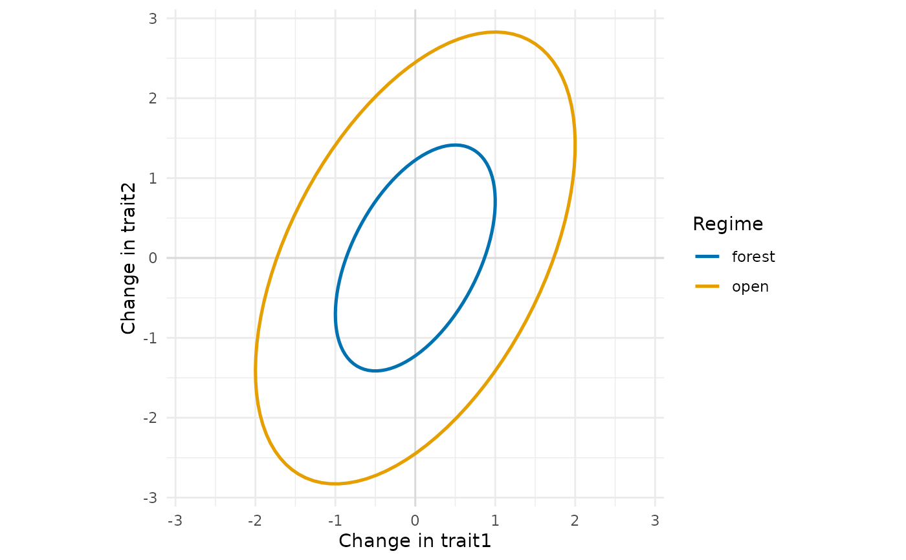
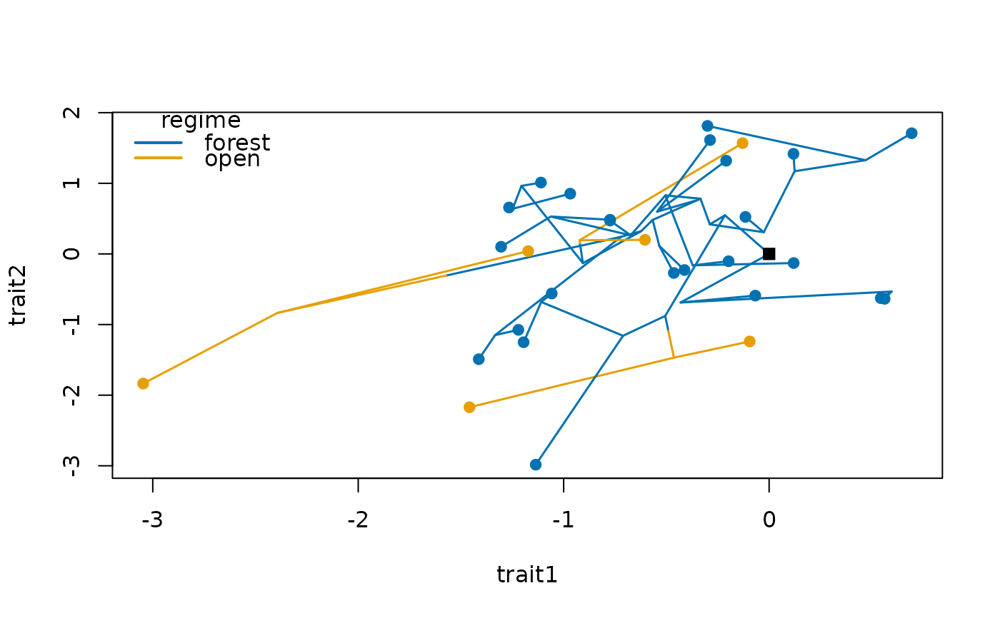

Builds the evolutionary rate matrix (the covariance of the changes of several traits per
unit time) for multivariate trait evolution with trait_ou(), with the structures that
mvMORPH fits (mvBM(param = list(constraint = )), Clavel et al. 2015). Variances are rates
of evolution of each trait, and correlations are evolutionary correlations between traits.
Arguments
- variance
Rate of each trait (variance per unit time), recycled to the number of traits. For
"correlation", a named list with the rates of each regime.- correlation
Correlation between traits: one number for all pairs or a correlation matrix. For
"variance", a named list with the correlations of each regime.- constraint
Structure of the matrix or matrices; see Details.
- n_traits
Number of traits, when neither
variancenorcorrelationgives it.- scale
For
"proportional", the multiplier of each regime, named by regime.- eigenvalues
For
"shared", a named list with the eigenvalues of each regime, one per trait.- x
A
rate_matrixobject.- ...
Not used.
Value
An object of class rate_matrix: a symmetric matrix with one row and column per
trait, or, for the multi-regime structures, a named list of them, one per regime. The
attribute constraint holds the structure. Either can be passed to
trait_ou(sigma2 = ); plot() draws them as ellipses.
Details
One matrix, for the whole tree:
"default": any rate matrix, with the variances invarianceand the correlations incorrelation. A matrix supplied by the user can also be passed directly totrait_ou(sigma2 = )."diagonal": traits evolve independently, each with its own rate."equaldiagonal": traits evolve independently, all with the same rate."equal": all traits with the same rate, correlated (Adams 2013).
One matrix per selective regime, for multi-regime models (regimes in trait_ou()):
"proportional": matrices proportional to each other, the matrix built fromvarianceandcorrelationmultiplied byscale, one positive number per regime."shared": matrices with the same eigenvectors, those of the matrix built fromvarianceandcorrelation, and the eigenvalues of each regime ineigenvalues, in the order ofeigen()(decreasing eigenvalues of that matrix)."variance": the same variances in all regimes, and the correlations of each regime incorrelation, a named list."correlation": the same correlations in all regimes, and the variances of each regime invariance, a named list.
The regimes are named by the names of scale, eigenvalues, or the list in correlation
or variance, and those names must be the regimes of the tree.
References
Adams, D. C. (2013). Comparing evolutionary rates for different phenotypic traits on a phylogeny using likelihood. Systematic Biology, 62, 181–192. doi:10.1093/sysbio/sys083
Clavel, J., Escarguel, G., & Merceron, G. (2015). mvMORPH: an R package for fitting multivariate evolutionary models to morphometric data. Methods in Ecology and Evolution, 6, 1311–1319. doi:10.1111/2041-210X.12420
See also
trait_ou(), which simulates traits with these matrices, and plot_traits().
Other species traits:
arrival_ages(),
as_herodotools(),
food_web_rates(),
history_rates(),
paint_regimes(),
partner_turnover(),
plot.rate_matrix(),
plot_rates(),
plot_traits(),
region_pool(),
species_traits(),
tip_history_metrics(),
trait_bm(),
trait_mk(),
trait_ou(),
trait_rates(),
turnover_rates()
Examples
rate_matrix(c(1, 2), correlation = 0.5)
#> <rate_matrix> default structure, 2 traits
#> trait1 trait2
#> trait1 1.0000000 0.7071068
#> trait2 0.7071068 2.0000000
rate_matrix(1, correlation = 0.3, constraint = "equal", n_traits = 3)
#> <rate_matrix> equal structure, 3 traits
#> trait1 trait2 trait3
#> trait1 1.0 0.3 0.3
#> trait2 0.3 1.0 0.3
#> trait3 0.3 0.3 1.0
# two habitats, the open one evolving four times faster in all directions
r <- rate_matrix(c(1, 2), correlation = 0.5, constraint = "proportional",
scale = c(forest = 1, open = 4))
r
#> <rate_matrix> proportional structure, 2 traits, 2 regimes
#>
#> regime forest:
#> trait1 trait2
#> trait1 1.0000000 0.7071068
#> trait2 0.7071068 2.0000000
#>
#> regime open:
#> trait1 trait2
#> trait1 4.000000 2.828427
#> trait2 2.828427 8.000000
plot(r)

set.seed(1)
tr <- treeshapesim::sim_tree_shape(30)
habitat <- trait_mk(tr, q = 0.5, states = c("forest", "open"))
x <- trait_ou(habitat, sigma2 = r, regimes = habitat)
plot_traits(x, habitat, regimes = habitat)

# several correlated traits in community assembly
assemble_community(x, size = 10, rule = "limiting_similarity")$community
#> [1] "t1" "t6" "t14" "t20" "t22" "t23" "t25" "t26" "t27" "t30"